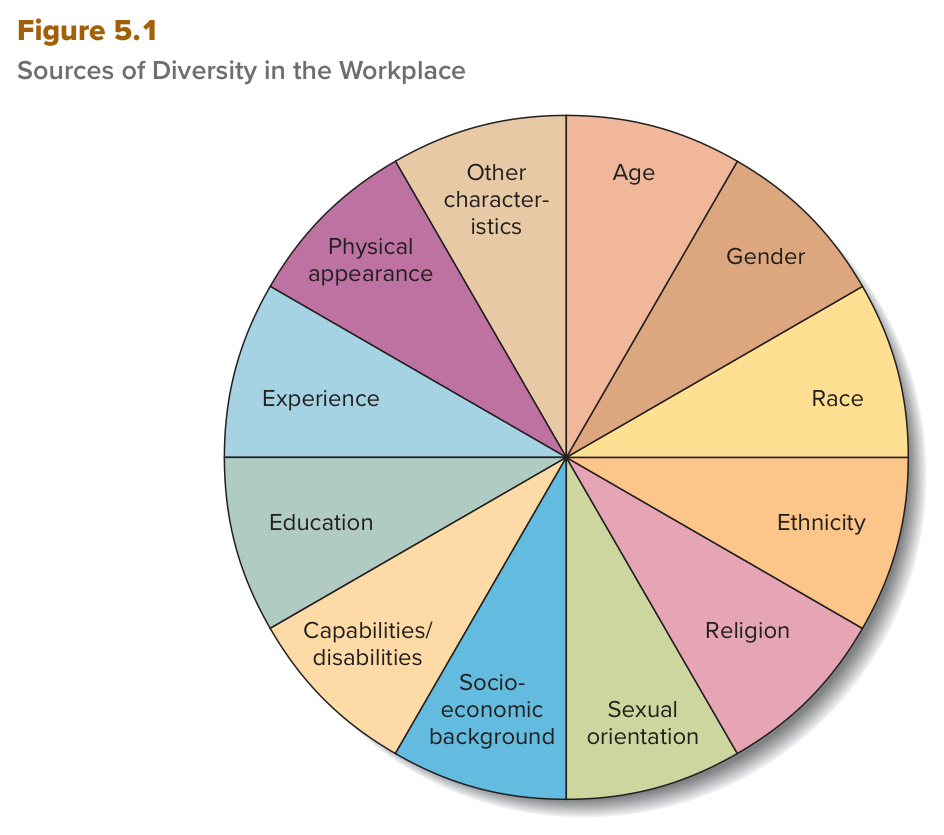

الفصل الخامس — التنوّع المتزايد في القوى العاملة
MGT 102 · Chapter 5 · القسم ١ من ٤:
The Increasing Diversity of the Workforce
الهدف LO5-1: Discuss the increasing diversity of the workforce and the organizational environment.
هذا القسم «مين الناس اللي تشتغل معهم، وكيف يختلفون، ووش يقول القانون عنهم»
الفصل الرابع كان عن الأخلاق وأصحاب المصلحة (stakeholders). الفصل الخامس ياخذ نفس الفكرة لداخل مكان العمل:
الموظفين مو نسخة وحدة — يختلفون في العمر والجنس والعرق والدين والدخل والمظهر وغيرها، وهذا اسمه diversity (التنوّع).
والقسم الأول هذا يحط الأساس كله (LO5-1): وش هو التنوّع بالضبط، ليش صار من أهم قضايا الإدارة، وكيف القوى العاملة
والبيئة حول المنظمة تتنوّع سنة بعد سنة في ثمان أنواع يشرحها الكتاب وحدة وحدة.
ركّز على الأعداد من الحين لأن الاختبار يبني عليها: ١٢ مصدر للتنوّع في Figure 5.1، ٤ أسباب ليش التنوّع قضية ملحّة، و٨ قوانين بسنواتها في Table 5.1 — والجدول هذا من أكثر شي ينسأل عنه في الفصل كله. القسم فيه أرقام كثيرة؛ ما يحتاج تحفظ كل رقم، بس احفظ اللي في صناديق «الفخ». والتعاريف (diversity وglass ceiling وethnicity وsocioeconomic background) خذها حرفية من صناديق EXAM BOX.
Diversity = الاختلافات بين الناس بسبب العمر والجنس والعرق والإثنية والدين... وأي صفة ثانية نستخدمها نفرّق فيها بينهم. وإدارته صح أكبر من التوظيف: تفهم الناس المختلفين، تصحّح المفاهيم الغلط، وتستفيد من مهاراتهم.
الفصل يفتح بسؤال: What steps can an organization take to ensure diversity among its workforce? — وش الخطوات اللي تسويها المنظمة عشان تضمن التنوّع في موظفيها؟ ومثاله دوري كرة القدم الأمريكية NFL، اللي يبي موظفيه وفرقه يكونون من نفس الناس اللي يلعبون اللعبة ويشجّعون فرقهم:
- يقيس بالأرقام: يحلّل بيانات موظفيه حسب العرق والإثنية والجنس والأجيال (race, ethnicity, gender, and generational categories). لقى إن 39% من مدرّبيه في 2021 من أقلية عرقية أو إثنية (كانت 35% السنة اللي قبلها)، بس نسبة رؤساء المدرّبين (head coaches) من الأقليات ثابتة على 9%، وعدد minority offensive coordinators نقص في نفس الفترة.
- أهداف توظيف: كل فرق الدوري لازم توظّف offensive assistant يكون امرأة أو من أقلية عرقية أو إثنية — لأن الترقيات لرئيس مدرّبين تاريخياً تجي من اللي عندهم خبرة في تدريب الهجوم، فهذا يحطهم في الطريق.
- Rooney Rule (من 2003): الفريق اللي يبي يوظّف head coach لازم يقابل على الأقل مرشّحَين خارجيين من أقلية عرقية أو إثنية. وأضافوا مؤخراً إن صنّاع القرار في توظيف المدرّبين والمدراء العامين لازم يتدرّبون على التوظيف الشامل (inclusive hiring).
- 2022 — الطب الرياضي: تعاون مع NFL Physicians Society وProfessional Football Athletic Trainer Society، وأول سنة ركّزوا على طلاب الطب السود من الجامعات والكليات السوداء تاريخياً (HBCUs): 16 تدريب (internships) مع 8 فرق. والحجّة: أبحاث تقول إن النتايج الصحية للمرضى المتنوّعين تطلع أحسن لما الطاقم الطبي نفسه متنوّع — فالتنوّع يخدم صحة اللاعبين.
- التقدّم والفجوة: نسبة المدرّبات زادت، بس 9% بس من رؤساء المدرّبين سود مقابل 58% من اللاعبين، وزيادة 25% في عدد المدرّبات بمعسكر التدريب كانت من 12 امرأة إلى 15 بس — النسبة تخدع.
الخلاصة اللي يبيها الكتاب: ممكن مشكلة الـNFL إنه ركّز بشكل ضيّق على التوظيف. الاحتضان الكامل للتنوّع يحتاج أكثر من أرقام مستهدفة؛ في المنظمات اللي تستفيد فعلاً من التنوّع، الموظفين المختلفين fully included and heard, not just recruited and hired — مشمولين ومسموعين، مو بس متوظّفين.
الكتاب يقول إدارة التنوّع والشمول بفعالية (effective management of diversity and inclusion) أكبر من إنك توظّف ناس متنوّعين. معناها ثلاث أشياء:
- تتعلّم تقدّر وتستجيب صح للاحتياجات والاتجاهات والمعتقدات والقيم (needs, attitudes, beliefs, and values) اللي يجيبونها الناس المختلفين للمنظمة.
- تصحّح المفاهيم الغلط (misconceptions) عن ليش وكيف فئات الموظفين تختلف عن بعض.
- تلقى أفضل طريقة تستخدم فيها مهارات ومواهب الموظفين المتنوّعين.
والبيئة نفسها تتنوّع من كل النواحي: مو بس القوى العاملة العالمية، حتى الموردين والعملاء صاروا متنوّعين أكثر. فالمدير لازم يدير التنوّع بشكل استباقي (proactively) عشان يجذب أفضل الموظفين ويحافظ عليهم وينافس في بيئة عالمية. مثال الكتاب: مدراء شركة التدقيق والاستشارات Deloitte سوّوا برنامج يشجّع الموردين من الأقليات الإثنية يتنافسون على أعمالها، والشركة ترعى مدارس وكليات تمدّها بخرّيجين مدرّبين.
وأحياناً مدراء نيّتهم طيبة (well-intentioned) يعاملون فئات الموظفين بشكل مختلف بدون قصد (inadvertently)، مع إنه ما فيه أي فروق في الأداء بينهم. الفصل كله يشرح ليش يصير كذا ووش الخطوات اللي تمنعه.
الكتاب يبدأ القسم بجملة احفظها: التنوّع المتزايد في القوى العاملة من أهم قضايا الإدارة اللي طلعت في آخر 40 سنة.
| المصطلح | التعريف بالإنجليزي (احفظه حرفي) | بالعربي |
|---|---|---|
| Diversity التنوّع |
Dissimilarities or differences among people due to age, gender, race, ethnicity, religion, sexual orientation, socioeconomic background, education, experience, physical appearance, capabilities/disabilities, and any other characteristic that is used to distinguish among people. | الاختلافات بين الناس بسبب العمر، الجنس، العرق، الإثنية، الدين، التوجّه الجنسي، الخلفية الاجتماعية-الاقتصادية، التعليم، الخبرة، المظهر الجسدي، القدرات/الإعاقات، وأي صفة ثانية نستخدمها عشان نميّز بين الناس. |
لاحظ آخر التعريف: and any other characteristic — يعني القائمة مفتوحة مو مقفلة. والكتاب يقول التنوّع يطلّع قضايا أخلاقية وقضايا مسؤولية اجتماعية (ethical issues and social responsibility issues — الفصل ٤)، وهو قضية حرجة للمنظمات: لو ما انداره صح ممكن يطيّح المنظمة على ركبها (bring an organization to its knees)، خصوصاً في بيئتنا العالمية.

هذا هو Figure 5.1 في الكتاب. دايرة (pie) مقسومة ١٢ قطعة متساوية، كل قطعة بلون ومكتوب فيها مصدر من مصادر التنوّع. كيف تقرأه: ابدأ من فوق على يمين الخط (Age) وامشِ مع عقارب الساعة: Age ← Gender ← Race ← Ethnicity ← Religion ← Sexual orientation ← Socioeconomic background ← Capabilities/disabilities ← Education ← Experience ← Physical appearance ← Other characteristics. القطع متساوية — يعني الشكل ما يقول إن مصدر أهم من الثاني؛ هو بس صورة لتعريف diversity نفسه. انتبه: نفس عناصر التعريف بس بترتيب مختلف شوي (الشكل يحط Capabilities/disabilities قبل Education)، وآخر قطعة Other characteristics قطعة مستقلة تقابل any other characteristic في التعريف. وش يجي منه بالاختبار: «أي من التالي مو من مصادر التنوّع في Figure 5.1؟» — والجواب عادةً شي زي الشخصية (personality) أو الأداء أو الراتب — أو يسألك عن عدد القطع (١٢).
| # | القطعة في الشكل | بالعربي | وين يشرحها الكتاب |
|---|---|---|---|
| ١ | Age | العمر | عنوان Age |
| ٢ | Gender | الجنس | عنوان Gender |
| ٣ | Race | العرق | عنوان Race and Ethnicity |
| ٤ | Ethnicity | الإثنية | عنوان Race and Ethnicity |
| ٥ | Religion | الدين | عنوان Religion |
| ٦ | Sexual orientation | التوجّه الجنسي | عنوان Sexual Orientation |
| ٧ | Socioeconomic background | الخلفية الاجتماعية-الاقتصادية | عنوان Socioeconomic Background |
| ٨ | Capabilities/disabilities | القدرات/الإعاقات | عنوان Capabilities/Disabilities |
| ٩ | Education | التعليم | ما له عنوان خاص — يدخل تحت Other Kinds of Diversity |
| ١٠ | Experience | الخبرة | تحت Other Kinds of Diversity (خلفيات وخبرات متنوّعة) |
| ١١ | Physical appearance | المظهر الجسدي | تحت Other Kinds of Diversity |
| ١٢ | Other characteristics | صفات ثانية | تحت Other Kinds of Diversity |
والكتاب يشرح التنوّع في المتن تحت ثمان عناوين فرعية: Age · Gender · Race and Ethnicity · Religion · Capabilities/Disabilities · Socioeconomic Background · Sexual Orientation · Other Kinds of Diversity — وهي اللي بتدرسها في المفهومين الثالث والرابع. وملخّص آخر الفصل (Summary and Review) يعدّ الأشكال كذا: age, gender, race and ethnicity, religion, capabilities/disabilities, socioeconomic background, sexual orientation, and physical appearance.
In organizations that value diversity well enough to benefit from diverse employees' strengths and contributions, those employees are fully included and heard, not just recruited and hired.
Effective management of diversity and inclusion means more than hiring diverse employees. It means learning to appreciate and respond appropriately to the needs, attitudes, beliefs, and values that diverse people bring to an organization. It also means correcting misconceptions about why and how various kinds of employee groups differ from one another and finding the most effective way to use the skills and talents of diverse employees.
One of the most important management issues to emerge over the last 40 years has been the increasing diversity of the workforce. Diversity is dissimilarities—differences—among people due to age, gender, race, ethnicity, religion, sexual orientation, socioeconomic background, education, experience, physical appearance, capabilities/disabilities, and any other characteristic that is used to distinguish among people (see Figure 5.1).
- الأعداد: ١٢ قطعة في Figure 5.1 · ٨ عناوين فرعية في المتن · ٨ أشكال في ملخّص آخر الفصل. لو السؤال «according to Figure 5.1» فالجواب من القطع الـ١٢.
- التعريف ينتهي بـany other characteristic — التنوّع مو محصور في الصفات المحمية بالقانون. اختيار يقول diversity refers only to race and gender = غلط.
- Personality وjob performance وsalary مو قطع في الشكل. الشخصية موضوع الفصل ٣.
- إدارة التنوّع = أكثر من التوظيف. اختيار يقول «إدارة التنوّع الفعّالة يعني توظّف ناس متنوّعين» = ناقص؛ عبارة الـNFL: included and heard (الهدف) مقابل recruited and hired (البداية).
- التنوّع مو بس في الموظفين — الموردين والعملاء بعد (مثال Deloitte).
- الرقم 40 سنة = عمر قضية التنوّع كأهم قضية إدارية. لا تخلطه مع 25 سنة (التمييز في التوظيف ضد الأمريكيين الأفارقة ما تغيّر) ولا 20 سنة (شكاوى التمييز الديني زادت 50%).
التنوّع قضية ملحّة لـأربع أسباب: (١) واجب أخلاقي والظلم غير قانوني كمان، (٢) إدارته صح ترفع فعالية المنظمة، (٣) المعاملة غير العادلة لسه موجودة، (٤) الـglass ceiling بدأ يتشقّق بس الشغل لسه كثير.
الكتاب يقول فيه عدّة أسباب تخلّي التنوّع قضية ملحّة في الإعلام وعند المدراء والمنظمات — ويعدّها أربع نقاط:
| # | السبب | وش يقول الكتاب بالضبط |
|---|---|---|
| ١ | واجب أخلاقي (ethical imperative) | في مجتمعات كثيرة فيه ضغط أخلاقي قوي إن الأقليات والفئات الممثّلة تمثيل ناقص (underrepresented groups) لازم تاخذ فرص متساوية وتنعامل بعدل وإنصاف (fairly and justly). والمعاملة غير العادلة غير قانونية كمان (Unfair treatment is also illegal). |
| ٢ | يرفع فعالية المنظمة (organizational effectiveness) | لما المدير يدير التنوّع صح، يشجّع باقي المدراء يعاملون الناس بعدل وإنصاف، ويدرك إن التنوّع مورد تنظيمي مهم يساعد المنظمة تكسب ميزة تنافسية (competitive advantage). الأبحاث تقول فيه مواقف معيّنة التنوّع يرفع فيها الأداء — مثلاً في الفرق (teams) — بس مجرد وجود قوى عاملة متنوّعة ما يضمن أداء أعلى (may not guarantee higher performance). والمدراء لسه يدرسون أثر التنوّع على مكان العمل. |
| ٣ | المعاملة غير العادلة لسه موجودة | فيه دليل كبير إن الناس المتنوّعين لسه ينظلمون في مكان العمل بسبب biases (تحيّزات) وstereotypes
(صور نمطية) وovert discrimination (تمييز صريح) — الثلاث بتدرسها بالتفصيل في درس ٣. الأدلة:
|
| ٤ | السقف الزجاجي بدأ يتشقّق (beginning to crack) | الحاجز اللي ما ينشاف ويمنع النساء والأقليات من الترقية للمناصب العليا بدأ يتشقّق — بس لسه فيه شغل كثير. الأرقام: في نوفمبر 2022 بس 32 من قادة شركات Fortune 500 نساء (6.4%)، وفيه بس امرأتين سود يديرون منظمات كبرى: Roz Brewer (CEO of Walgreens Boots Alliance) وThasunda Brown Duckett (CEO of TIAA). |
وملخّص الكتاب آخر الفصل (Summary and Review) يجمعها في جملة: التنوّع قضية ملحّة للمدراء والمنظمات لأسباب تجارية وأخلاقية (for business and ethical reasons) — نفس الفكرة اللي بترجع لها في درس ٢.
| المصطلح | التعريف بالإنجليزي (احفظه حرفي) | بالعربي |
|---|---|---|
| Glass ceiling السقف الزجاجي |
A metaphor alluding to the invisible barriers that prevent minorities and women from being promoted to top corporate positions. | استعارة (metaphor) تشير للحواجز اللي ما تنشاف وتمنع الأقليات والنساء من الترقية للمناصب العليا في الشركات. |
ليش «زجاجي»؟ لأنك تشوف المنصب فوقك بس ما تقدر توصله — الحاجز ما ينشاف ولا هو مكتوب في أي سياسة. وتحت صورة في الكتاب لمديرة تنفيذية في طيارة الشركة يقول: المنظر هذا صار أقل ندرة من قبل، بس السقف الزجاجي لسه حاجز حقيقي للنساء والأقليات والفئات الممثّلة تمثيل ناقص. وبتشوف في المفهوم الجاي إن الكتاب يحط فجوة الأجور جنبه: الثنتين لسه قضية.
وبعد الأسباب الأربعة الكتاب يقول: قبل ما نناقش قضايا إدارة التنوّع، لازم نوثّق كم صارت القوى العاملة الأمريكية متنوّعة — وهذا اللي تسويه الأنواع الثمانية في المفهومين الجايين.
Diversity raises important ethical issues and social responsibility issues (see Chapter 4). It is also a critical issue for organizations—one that if not handled well can bring an organization to its knees, especially in our increasingly global environment.
There is a strong ethical imperative in many societies that minorities and other underrepresented groups must receive equal opportunities and be treated fairly and justly. Unfair treatment is also illegal.
Effectively managing a diverse team of employees can improve organizational effectiveness. When managers effectively manage diversity, they not only encourage other managers to treat diverse members of an organization fairly and justly but also realize that diversity is an important organizational resource that can help an organization gain a competitive advantage. Current research suggests there are specific situations in which diversity can enhance performance, for example, in teams. However, simply having a diverse workforce may not guarantee higher performance.
There is substantial evidence that diverse individuals continue to experience unfair treatment in the workplace as a result of biases, stereotypes, and overt discrimination.
Finally, the glass ceiling—the invisible barrier that prevents women and minorities from being promoted to top corporate positions—is beginning to crack, though much work still needs to be done.
- الأسباب أربعة، والأول فيه شقّين: أخلاقي وقانوني. اختيار يقول unfair treatment is unethical but not illegal = غلط.
- جملة الكتاب: simply having a diverse workforce may not guarantee higher performance. اختيار يقول guarantees higher performance = عكس الكتاب. التنوّع يرفع الأداء في مواقف معيّنة زي الفرق.
- Glass ceiling يمنع النساء والأقليات مو النساء بس، والحواجز invisible — مو قوانين ولا سياسات مكتوبة. وحالته الحين beginning to crack: مو «انتهى» ولا «ما تغيّر أبداً».
- Glass ceiling ≠ overt discrimination: الثاني تمييز متعمّد وواضح (درس ٣)، الأول حاجز ما ينشاف.
- الأرقام: 32 قائدة في Fortune 500 = 6.4% (نوفمبر 2022) · امرأتين سود بس: Roz Brewer (Walgreens Boots Alliance) وThasunda Brown Duckett (TIAA).
- Pay secrecy تقلّل قوة تفاوض النساء على الرواتب ← عامل في gender wage gap — مو في السقف الزجاجي.
أمريكا تشيخ (المدير يحمي الموظف من التمييز بسبب عمره)، والنساء لسه ورا الرجال في الأجر والمناصب العليا مع إن أداءهن القيادي أعلى، والأقليات العرقية والإثنية تكبر لين تصير قريب من 56% من السكان في 2060.
- حسب U.S. Census Bureau: العمر الوسيط (median age) في أمريكا أعلى شي في التاريخ: 38.8 سنة.
- ومتوقّع إنه بحلول 2060 قريب من 24% من السكان يكونون 65 سنة أو أكبر.
- والقانون: Age Discrimination in Employment Act of 1967 يمنع التمييز بسبب العمر (تفاصيله في Table 5.1 — المفهوم الخامس).
وش يسوي المدير؟ (ثلاث أشياء)
- يكون متيقّظ (vigilant) إن ما أحد من الموظفين ينظلم بسبب عمره.
- يتأكد إن السياسات والإجراءات (policies and procedures) اللي عنده تعامل كل العمال بعدل بغضّ النظر عن أعمارهم.
- إدارة التنوّع صح معناها إن الموظفين من أعمار مختلفة يتعلّمون من بعض، يشتغلون مع بعض زين، ويستفيدون من المنظور الفريد (unique perspective) اللي عند كل واحد.
النساء والرجال الاثنين مشاركتهم كبيرة في القوى العاملة الأمريكية، بس أجر النساء لسه ورا. والأرقام كلها من الكتاب:
| الرقم | وش يعني |
|---|---|
| 56.5% / 68.0% | نسبة مشاركة النساء / الرجال في القوى العاملة الأمريكية (تقريباً) |
| $968 / $1,166 | الأجر الأسبوعي الوسيط (median weekly earnings) للنساء / للرجال |
| 40.9% | نسبة النساء من الموظفين في المناصب الإدارية والمهنية (managerial and professional positions) |
| 29.1% | نسبة النساء من التنفيذيين (executive officers) في شركات S&P 500 |
| 11% | نسبة النساء من أعلى المكتسبين (top earners) في نفس الشركات |
| تقريباً 32% | مقاعد مجالس الإدارة (board seats) في S&P 500 اللي تشغلها نساء — يعني تمثيلهن ناقص |
| 17 من 19 | قدرة قيادية تفوّقت فيها النساء على الرجال في تحليل آلاف تقييمات الأداء 360-degree |
- Gender wage gap (فجوة الأجور بين الجنسين) ضاقت في السنين الأخيرة بس لسه قضية، زيها زي الـglass ceiling.
- مصدر أرقام المناصب: Catalyst = منظمة غير ربحية تبحث في موضوع النساء في الأعمال.
- نساء بارزات يذكرهن الكتاب: Mary Barra (GM)، Roz Brewer (Walgreens)، Michele Buck (The Hershey Company) — يبرزن بين زملائهن الرجال وياخذن اهتمام إعلامي غير متناسب (disparate amount of attention).
- أبحاث شركات الاستشارات: التنفيذيات يتفوّقن على زملائهن الرجال في مهارات زي: تحفيز الآخرين (motivating others)، تعزيز التواصل الجيد (promoting good communication)، إنتاج شغل عالي الجودة (turning out high-quality work)، وحسن الإنصات (being good listeners).
- ومن الـ17 من 19 قدرة، الكتاب يسمّي: أخذ المبادرة (taking initiative)، الدفع للنتايج (driving for results)، القيادة الجريئة (exhibiting bold leadership)، وتبنّي التغيير في المنظمة (championing change).
- دراسة Catalyst: المنظمات اللي فيها نسبة نساء أعلى في الإدارة العليا كان أداؤها المالي أحسن بشكل ملحوظ.
- دراسة Credit Suisse: الشركات اللي في مجلس إدارتها امرأة أو أكثر أداؤها أحسن في العائد على حقوق الملكية (returns on equity) والمبيعات (sales) ورأس المال المستثمر (invested capital).
والكتاب يعلّق: دراسات زي هذي تخلّيك تستغرب ليش الـglass ceiling لسه يعرقل تقدّم النساء في الأعمال — موضوع يرجع له في درس ٤.
الأعراق في تعداد 2020 — الـU.S. Census Bureau ميّز بين ست أعراق (races):
| # | Race | بالعربي |
|---|---|---|
| ١ | White | أبيض |
| ٢ | Black or African American | أسود أو أمريكي من أصل أفريقي |
| ٣ | American Indian or Alaska Native | هندي أمريكي أو من سكان ألاسكا الأصليين |
| ٤ | Asian | آسيوي |
| ٥ | Native Hawaiian or Other Pacific Islander | من سكان هاواي الأصليين أو جزر المحيط الهادئ |
| ٦ | Some Other Race | عرق ثاني |
وفيه ثمان مجموعات إضافية انستخدمت في حسابات التنوّع في تعداد 2020: Hispanic؛ white alone, non-Hispanic؛ Black or African American alone, non-Hispanic؛ American Indian and Alaska Native alone, non-Hispanic؛ Asian alone, non-Hispanic؛ Native Hawaiian and Other Pacific Islander alone, non-Hispanic؛ Some Other Race alone, non-Hispanic؛ وMultiracial, non-Hispanic.
| المصطلح | التعريف بالإنجليزي (احفظه حرفي) | بالعربي |
|---|---|---|
| Ethnicity الإثنية |
A grouping of people based on some shared characteristic such as national origin, language, or culture. | تجميع الناس على أساس صفة مشتركة زي الأصل الوطني أو اللغة أو الثقافة. |
بس الـCensus Bureau يتعامل مع الإثنية بشكل مبسّط: الشخص يا Hispanic or Latino يا Not Hispanic or Latino. والحكومة سوّت بحث موسّع لتعداد 2020 عشان تضبط المجموعات الإثنية، وأكثر من أي وقت قبل ناس كثير يشوفون نفسهم متعدّدي الأعراق (multiracial) بإثنيات مختلفة.
| الرقم | وش يعني (حسب U.S. Census Bureau) |
|---|---|
| 1 من كل 3 | من سكان أمريكا ينتمي لـأقلية (يعني مو non-Hispanic white) |
| 18.9% / 80.6% | Hispanic or Latino / not Hispanic or Latino — أرقام إثنية مو عرقية |
| 59.3% | white alone (أبيض وغير هسباني أو لاتيني) |
| 75.8% | من اللي عرّفوا نفسهم بعرق واحد: white |
| 13.6% · 1.3% · 6.1% · 0.3% | Black or African American · American Indian or Alaska Native · Asian · Native Hawaiian and Other Pacific Islander alone |
| 2.9% | عرّفوا نفسهم بـعرقين أو أكثر |
| قريب من 56% | نسبة الأقليات المتوقّعة من سكان أمريكا في 2060 |
فجوة الأجور العرقية (بيانات Bureau of Labor Statistics): الأجر الأسبوعي الوسيط للرجال السود تقريباً 81% من أجر الرجال البيض، وللنساء السود تقريباً 83% من أجر النساء البيض — يعني لسه فيه شغل كثير عشان الفرص تكون متساوية لكل الموظفين. ومن هنا الكتاب يقول إن باقي الفصل يركّز على المعاملة العادلة لكل الموظفين.
الكتاب يكبّر الصورة: التنوّع العرقي والإثني المتزايد في بيئة المنظمة (العملاء والموردين) يأثّر على قراراتها وفعاليتها. المدراء والمنظمات ينذكّرون أكثر وأكثر إن أصحاب المصلحة متنوّعين ويتوقّعون إن قرارات المنظمة وأفعالها تعكس هذا التنوّع.
مثال الكتاب — صناعة الترفيه: جماعات مناصرة (advocacy groups) تضغط على الصناعة تزيد التنوّع في البرامج والتمثيل والكتابة والإنتاج. الهسبانيين أكثر من 19% من سكان أمريكا (أكثر من 62 مليون مشاهد محتمل)، بس أقل من 8% من شخصيات برامج وقت الذروة (prime-time) هسبانيين — حسب تقرير هوليوود للتنوّع من UCLA's College of Social Sciences. والضغط يزيد على الشبكات وخدمات البثّ (streaming services) والإعلام عموماً عشان يعكسون تنوّع السكان.
DEI&B = Diversity, Equity, Inclusion & Belonging (التنوّع والإنصاف والشمول والانتماء). الإطار عن أثر اللاتينيين على الاقتصاد الأمريكي. فئة Hispanic or Latino تشمل اللي أصلهم من أي دولة من 27 دولة في أوروبا (إسبانيا) وأمريكا الشمالية (المكسيك) وأمريكا الوسطى والجنوبية والكاريبي — مواليد أمريكا ومهاجرين، يتكلّمون إنجليزي أو إسباني أو خليط. ومساهمتهم في نموّ الاقتصاد أكبر من حجمهم (disproportionately)، والإطار يعطيك أربع طرق:
| # | المساهمة | التفاصيل |
|---|---|---|
| ١ | نموّ أسرع في العدد | الهسبانيين يزيدون 16% بالسنة مقابل 3% لغير الهسبانيين. السبب الأساسي معدّل مواليد أعلى، والهجرة لها دور. |
| ٢ | مشاركة أعلى في سوق العمل | مواليد أكثر = سكان صغار في العمر = مشاركة عالية (لأن الناس لما يكبرون يختارون ما يشتغلون أو ما يقدرون). نموّ سكاني + مشاركة أعلى = كاسبين أكثر = نموّ اقتصادي، وبدون زيادة الهسبانيين كان النموّ أبطأ. مساهمتهم في الناتج المحلي (GDP) في 2020: $2.8 trillion. |
| ٣ | ريادة الأعمال | يفتحون شركات بمعدّل أعلى من المتوسط: في 2020 كانوا 52% من الشركات الجديدة اللي توظّف (new employer businesses). وحسب Latino Donor Cooperative مساهمتهم تعادل خامس أكبر اقتصاد في العالم. والشركات الناشئة مربوطة بالنموّ والابتكار. |
| ٤ | التنوّع الثقافي (مساهمة نوعية) | يتنقّلون بين ثقافتين أو أكثر، وهذا يعطي كثير منهم cultural agility (رشاقة ثقافية) — أصل في مكان العمل. مثال: Patricia Mota، CEO of the Hispanic Alliance for Career Advancement: بنت مهاجرين مكسيكيين تعلّمت قيم تقليدية (العمل الجاد، العائلة، الإيمان)، وتعلّمت من شغلها الاستقلالية والتفكير الاستراتيجي، وتجمعهم عشان تشتغل بطريقة مرنة وشاملة (adaptable and inclusive). |
The aging of the population suggests that managers need to be vigilant to ensure that employees are not discriminated against because of age. Moreover, managers need to ensure that the policies and procedures they have in place treat all workers fairly, regardless of their ages. In addition, effectively managing diversity means employees of different ages can learn from each other, work well together, and take advantage of the unique perspective each has to offer.
Although the gender wage gap has narrowed in recent years, it continues to be an issue, just like the glass ceiling.
Although ethnicity refers to a grouping of people based on some shared characteristic such as national origin, language, or culture, the U.S. Census Bureau treats ethnicity in terms of whether a person is Hispanic or Latino or Not Hispanic or Latino.
At a general level, managers and organizations are increasingly being reminded that stakeholders are diverse and expect organizational decisions and actions to reflect this diversity.
- 38.8 = العمر الوسيط (median) الحين، و24% = نسبة اللي 65+ المتوقّعة في 2060 — توقّع مو واقع. والقانون ADEA سنة 1967.
- أرقام النساء: 40.9% إدارية ومهنية ← 29.1% تنفيذيين ← 11% أعلى المكتسبين (كل ما طلعت تقل)، و32% مقاعد المجالس رقم لحاله. الاختبار يبدّلهم.
- النساء تفوّقن في 17 من 19 قدرة — مو 19 من 19. Catalyst = غير ربحية (الإدارة العليا ← أداء مالي أحسن)؛ Credit Suisse = مجالس الإدارة ← returns on equity, sales, invested capital.
- Race ≠ ethnicity: العرق = ست فئات في التعداد؛ الإثنية = national origin, language, or culture، والتعداد يقسمها Hispanic or Latino / Not. فـ18.9% + 80.6% أرقام إثنية.
- 1 من 3 أقلية الحين، و~56% في 2060. وفجوة الأجور العرقية: 81% (رجال سود مقابل رجال بيض) · 83% (نساء سود مقابل نساء بيض) — لا تعكسهم.
- 19% من السكان مقابل أقل من 8% من شخصيات prime-time = مثال على إن أصحاب المصلحة متنوّعين ويبون قرارات المنظمة تعكسهم.
- إطار DEI&B: 27 دولة · 16% مقابل 3% · $2.8 trillion · 52% · خامس أكبر اقتصاد · أربع مساهمات، والرابعة cultural agility.
الدين والإعاقة: المدير يسوي reasonable accommodations (تسهيلات معقولة). الخلفية الاجتماعية-الاقتصادية: يكون حسّاس ومستجيب للأقل دخلاً. التوجّه الجنسي: التمييز فيه صار غير قانوني (2015). والمظهر الجسدي ما له علاقة بالأداء — إلا في وظيفة زي عرض الأزياء.
- Title VII of the Civil Rights Act يمنع التمييز على أساس الدين (وكمان العرق/الإثنية، بلد الأصل، والجنس — شوف Table 5.1 والفصل ١٢).
- وفوقه، في 1997 الحكومة الفيدرالية أصدرت “The White House Guidelines on Religious Exercise and Expression in the Federal Workplace”. هذي الإرشادات تقنياً تنطبق على المكاتب الفيدرالية بس، بس الشركات الكبيرة تعتمد عليها كثير.
- الإرشادات تطلب من أصحاب العمل يسوّون تسهيلات معقولة (reasonable accommodations) للممارسات الدينية زي الأعياد، بشرط ما تسبّب تكاليف كبيرة أو مشقّة (as long as doing so does not entail major costs or hardships).
وش يسوي المدير عملياً؟ يكون واعي بالأديان المختلفة ومعتقداتها، وخصوصاً متى تجي الأعياد الدينية:
- ما يحط اجتماعات حرجة في يوم مقدّس لأتباع دين معيّن.
- يكون مرن في إعطاء إجازات للشعائر الدينية.
- تسهيلات صغيرة بس مؤثّرة: يخلّي الموظف يطلع بدري بعض الأيام بدل استراحة الغدا، أو ينشر أعياد الأديان المختلفة في تقويم الشركة.
النتيجة: الناس يحسّون إنهم محترمين ومقدَّرين ويقدرون يمارسون دينهم، وولاء الموظفين غالباً يزيد (employee loyalty is often enhanced). ورقم مهم: حسب U.S. Equal Employment Opportunity Commission (EEOC)، عدد شكاوى التمييز الديني ومبالغ التسويات زادت أكثر من 50% خلال آخر 20 سنة.
- The Americans with Disabilities Act (ADA) of 1990 يسوي شيئين: يمنع التمييز ضد ذوي الإعاقة، ويلزم أصحاب العمل يسوّون reasonable accommodations عشان يقدرون يأدّون شغلهم بفعالية.
- قليل اللي يعارضون هدف القانون، بس التطبيق فيه تحدّيات. أهمها: بعض الناس يتردّدون يكشفون إعاقتهم لصاحب العمل، فيفوّتون التسهيلات اللي يحتاجونها. فالتحدي الأساسي للمدير: يخلق بيئة يحسّ فيها اللي يحتاج تسهيلات بالراحة إنه يفصح عن احتياجاته.
- وعشان كذا المدير غالباً لازم يثقّف نفسه وموظفيه عن الإعاقات.
- رقم: معدّل البطالة للعمال ذوي الإعاقة ضعف معدّل اللي بدون إعاقة.
- بس شركات كثيرة ملتزمة بتوظيفهم، وتعترف إن التنوّع والشمول استراتيجيتين حيويتين لنجاحها. في 2022 كرّمت American Association of People with Disabilities وDisability:IN 241 شركة بجائزة “Best Places to Work”، منها Airbnb, Best Buy, Hilton, Starbucks, and Target. هذي الشركات جابت 100% على Disability Equality Index = أداة قياس معياري (benchmarking tool) تعطي المنظمة درجة موضوعية على سياساتها وممارساتها في الإعاقة والشمول.
| المصطلح | التعريف بالإنجليزي (احفظه حرفي) | بالعربي |
|---|---|---|
| Socioeconomic background الخلفية الاجتماعية-الاقتصادية |
Typically refers to a combination of social class and income-related factors. | عادةً تعني خليط من الطبقة الاجتماعية والعوامل المرتبطة بالدخل. |
من ناحية الإدارة: التنوّع الاجتماعي-الاقتصادي (وخصوصاً التنوّع في مستويات الدخل) يتطلب إن المدير يكون حسّاس ومستجيب (sensitive and responsive) لاحتياجات وهموم الناس اللي ممكن ما يكونون أثرياء زي غيرهم.
القصة بالأرقام: في منتصف وأواخر التسعينات إصلاح الرعاية الاجتماعية (welfare reform) ركّز إن الأمهات العازبات وغيرهم من متلقّي المساعدات العامة ينضمّون أو يرجعون للقوى العاملة. ومع اقتصاد قوي، النتيجة انخفاضات قياسية في عدد العوائل والأسر والأطفال تحت خط الفقر (حسب تعداد 2000).
| السنة | معدّل الفقر في أمريكا | ليش |
|---|---|---|
| 2018 | 13.9% | نقطة المقارنة |
| 2020 | 9.1% (الكتاب يقول astounding — مذهل) | مساعدات الحكومة وقت COVID-19 عشان تثبّت الاقتصاد: شيكات تحفيز (stimulus checks)، تعزيز مدفوعات وأهلية تأمين البطالة، مدفوعات SNAP (برنامج المساعدة الغذائية التكميلية)، وrefundable child tax credits |
| 2021 | 12.8% | المعدّل العام، بعد ما مدفوعات التحفيز طلّعت أكثر من 11 مليون شخص من الفقر |
- الحكومات (الولايات والفيدرالية) دفعت أكثر من $1 trillion مزايا لمنخفضي الدخل — أكثر من أربع أضعاف اللي دفعوه في 2018.
- لما انتهت child tax credits نهاية 2021، أكثر من 3.7 مليون طفل رجعوا للفقر بداية 2022.
- كيف ينحسب خط الفقر؟ الـCensus Bureau يعتمد على أرقام دخل عتبة محدّدة مسبقاً (predetermined threshold income figures) مبنية على حجم العائلة وتركيبتها، وتتعدّل كل سنة حسب التضخّم. العائلة اللي دخلها تحت العتبة = فقيرة. مثال: في 2022 عائلة من أربعة تنحسب فقيرة لو دخلها السنوي تحت $27,750.
- ولما العامل يكسب أقل من $15 بالساعة، غالباً صعب — إن ما كان مستحيل — يلبّي احتياجات عائلته. وعوائل أكثر تواجه تحدي إنها تلقى رعاية أطفال مناسبة.
- وقت COVID-19: الشركات خلّت الموظفين يشتغلون من البيت، والمدارس سكّرت فترات طويلة والأطفال يدرسون عن بُعد. في مسح للآباء العاملين، قريب من 20% اضطرّوا يتركون الشغل أو يقلّلون ساعاتهم بسبب عدم توفّر رعاية أطفال بس. ويقدّرون إن أكثر من 2 مليون امرأة طلعن من سوق العمل يعتنين بأطفالهن، وكثير منهن رجعن في 2022 لما خفّت الجايحة وفتحت المدارس واستمر التضخّم العالي.
وش يسوي المدير؟ (نقطتين)
- يكون حسّاس ومستجيب لاحتياجات العمال اللي أقل حظ منه في: الدخل والموارد المالية، خيارات رعاية الأطفال ورعاية كبار السن، فرص السكن، ووجود مصادر دعم اجتماعي وعائلي.
- وبنفس الأهمية: يعطيهم فرص يتعلّمون ويتقدّمون ويساهمون مساهمات لها معنى في منظماتهم وهم يحسّنون وضعهم الاقتصادي.
الكتاب هنا يعرض أرقام وقرارات قانونية، واحفظها زي ما هي للاختبار:
- حسب تقرير Gallup: تقريباً 7.1% من الأمريكيين عرّفوا نفسهم كـLGBTQ في 2021 — ضعف النسبة في 2012 لما Gallup قاسها أول مرة.
- في 2015 أعلنت EEOC إن التمييز في مكان العمل على أساس التوجّه الجنسي غير قانوني حسب القانون الفيدرالي. وفي نفس السنة المحكمة العليا الأمريكية حكمت إن زواج المثليين قانوني في الولايات الخمسين.
- شركات أكثر وأكثر تعترف بشمول هالموظفين، وتأكّد حقهم في معاملة عادلة ومتساوية، وتعطي مزايا لشركائهم و/أو أزواجهم.
- Corporate Equality Index (CEI) 2022 — تقرير سنوي تنشره Human Rights Campaign Foundation: 842 صاحب عمل أمريكي جابوا تقييم 100% ولقب “best place to work for LGBTQ equality”. وقبل عقدين، أول مؤشر كرّم 13 شركة بس. ومن الشركات المذكورة: Apple, Amazon, AT&T, CVS Health, General Mills, Kroger, Sephora, Walmart, and Macy's.
معايير تقييم الـCEI — أربعة مكوّنات:
| # | المكوّن | بالعربي |
|---|---|---|
| ١ | Non-discrimination policies across business entities | سياسات عدم تمييز في كل كيانات الشركة |
| ٢ | Equitable benefits for LGBTQ workers and their families | مزايا منصفة للموظفين وعوائلهم |
| ٣ | An inclusive organizational culture | ثقافة منظمة شاملة |
| ٤ | A commitment to corporate social responsibility | التزام بـالمسؤولية الاجتماعية للشركات |
فيه أنواع ثانية مهمة في المنظمات، والمدير لازم يتعامل معها صح، وكلها مصادر محتملة لمعاملة غير عادلة (potential sources of unfair treatment):
- الخلفيات والخبرات: المنظمات والفرق تحتاج أعضاء بخلفيات وخبرات متنوّعة. وأوضح مثال: انتشار cross-functional teams (فرق متعدّدة الوظائف) اللي أعضاؤها يجون من أقسام مختلفة زي marketing, production, finance, and sales (الفرق بالتفصيل في الفصل ١٥). مثلاً الفريق اللي يطوّر ويطلق منتج جديد غالباً يحتاج خبرة ناس مو بس من research and design وengineering، بل كمان من marketing, sales, production, and finance.
- المظهر الجسدي (physical appearance): الموظفين يختلفون في شكلهم، وهذا ما له علاقة بأدائهم الوظيفي — إلا لو الوظيفة نفسها المظهر فيها له دور، زي عرض الأزياء (modeling). ومع كذا، أحياناً هالمصادر الجسدية تأثّر على معدّلات الترقية والرواتب.
- الأرقام: في مسح حديث، لما عرضوا صورة امرأة ممتلئة الجسم على 500 متخصّص توظيف، بس 15.6% قالوا بيوظّفونها. وفي دراسة ثانية، العمال المتحيّزين شافوا الناس ممتلئي الجسم أقل كفاءة (less competent).
الخلاصة: المدير لازم يتأكد إن كل الموظفين ينعاملون بعدل بغضّ النظر عن مظهرهم الجسدي.
LO5-1: ليش كل اللي فات يهم المدير
الكتاب يختم القسم بفكرة تربط كل شي ببعض: تنوّع البيئة (العملاء والموردين والمجتمع) يزيد تنوّع القوى العاملة نفسها، وهذا بدوره يزيد التحدّيات اللي تواجه المدراء في إدارة التنوّع بفعالية. وكل نوع تنوّع شفناه فوق عنده مجموعة قضايا خاصة فيه لازم المدير يفهمها قبل ما يتصرف — وفهمها مو دايماً سهل، وكثير من المدراء الواعين اكتشفوا كذا بنفسهم.
ونقطة الكتاب هنا: البحث في كيف تنعامل الفئات المختلفة الحين وفي unconscious biases (تحيّزات غير واعية) اللي ممكن تضرّهم مهم جداً، لأنه يخلّي المدير ينتبه للطرق الخفيّة (subtle ways) اللي ممكن الفئات المتنوّعة تنعامل فيها بظلم مع الوقت (unfairly over time). التحيّز والصور النمطية والتمييز الصريح بالتفصيل بتشوفها في درس ٣، وخطوات المدير عشان يمنع الظلم في درس ٤.
The guidelines require that employers make reasonable accommodations for religious practices, such as observances of holidays, as long as doing so does not entail major costs or hardships.
The Americans with Disabilities Act (ADA) of 1990 prohibits discrimination against persons with disabilities and requires that employers make reasonable accommodations to enable these people to effectively perform their jobs. A key challenge for managers is to promote an environment in which employees who need accommodation feel comfortable disclosing their needs.
The term socioeconomic background typically refers to a combination of social class and income-related factors. From a management perspective, socioeconomic diversity (and, in particular, diversity in income levels) requires that managers be sensitive and responsive to the needs and concerns of individuals who might not be as wealthy as others.
In 2015, the Equal Employment Opportunity Commission pronounced that workplace discrimination on the grounds of sexual orientation is illegal, according to federal law.
Other kinds of diversity are important in organizations, are critical for managers to deal with effectively, and are potential sources of unfair treatment.
Employees differ from each other in physical appearance, and it has no bearing on their job performance unless they have jobs in which physical appearance plays a role, such as modeling.
- Reasonable accommodations تجي مرتين: للدين (إرشادات البيت الأبيض 1997، بشرط does not entail major costs or hardships) وللإعاقة (ADA 1990). انتبه أي وحدة يسأل عنها.
- إرشادات 1997 = إرشادات مو قانون، وتقنياً للمكاتب الفيدرالية بس — والشركات الكبيرة تعتمد عليها. ومو صف في Table 5.1.
- ADA فيه شقّين: يمنع + يلزم بالتسهيلات. والتحدي اللي يذكره الكتاب: الموظف يتردّد يكشف إعاقته — فالمدير يخلق بيئة مريحة للإفصاح.
- Disability Equality Index (الإعاقة، 241 شركة) ≠ Corporate Equality Index (LGBTQ، 842 مقابل 13 قبل عقدين، أربع مكوّنات). الاختبار يخلط المؤشرين.
- Socioeconomic background = social class + income-related factors — مو التعليم ولا العرق. والفقر: 2018 = 13.9% · 2020 = 9.1% (الأقل، بسبب المساعدات) · 2021 = 12.8%.
- التوجّه الجنسي: 2015 = إعلان EEOC (مو قانون في الجدول) · 7.1% في 2021 = ضعف 2012.
- المظهر الجسدي: الاستثناء الوحيد في الكتاب modeling · 500 متخصّص و15.6% بس.
- سلسلة الختام: بيئة أكثر تنوّعاً ← قوى عاملة أكثر تنوّعاً ← تحدّيات أكثر للمدراء. والبحث في unconscious biases مهم لأنه يكشف الطرق الخفيّة اللي تنظلم فيها الفئات مع الوقت — اختيار يقول «المعاملة غير العادلة دايماً واضحة وصريحة» = عكس الكتاب.
Table 5.1 يلخّص ثمان قوانين أمريكية لتكافؤ فرص العمل (equal employment opportunity — EEO) تمنع التمييز بين الفئات المتنوّعة، بالترتيب من 1963 لـ1994. احفظ السنة + القانون + الكلمة المفتاحية.
الكتاب يذكر في فقرة العمر إن قوانين تكافؤ فرص العمل الكبرى اللي تمنع التمييز بين الفئات المتنوّعة ملخّصة في Table 5.1، ويناقشها بعمق أكثر في الفصل ١٢. وعنوان الجدول يقول إنها قوانين تأثّر على إدارة الموارد البشرية (Affecting Human Resources Management) — يعني قرارات التوظيف والفصل والأجر والترقية والإجازات.
![Table 5.1 — Major equal employment opportunity laws affecting human resources management: a three-column table of Year, Law and Description listing eight U.S. laws in time order — 1963 Equal Pay Act, 1964 Title VII of the Civil Rights Act, 1967 Age Discrimination in Employment Act, 1978 Pregnancy Discrimination Act, 1990 Americans with Disabilities Act, 1991 Civil Rights Act, 1993 Family and Medical Leave Act and 1994 Uniformed Services Employment and Reemployment Rights Act — each with a one-sentence description](../img/mgt102/table-5-1.png)
هذا هو Table 5.1 في الكتاب. ثلاث أعمدة: Year (السنة) · Law (القانون) · Description (وش يسوي)، وثمان صفوف مرتّبة زمنياً من 1963 لـ1994. كيف تقرأه: في الصورة السنة مكتوبة تحت في كل صف (على مستوى آخر سطر من الوصف) واسم القانون فوق — فلا تقرأ 1964 كأنها تبع Age Discrimination اللي تحتها: الصف الأول Equal Pay Act = 1963، والثاني Title VII = 1964. امشِ صف صف واربط كل قانون بالفئة اللي يحميها: الجنس في الأجر · خمس أسس في Title VII · العمر فوق 40 · الحمل · الإعاقة · التعويضات · الإجازة · العسكريين. وانتبه إن Civil Rights Act يطلع مرتين (1964 و1991). وش يجي منه بالاختبار: يعطيك موقف (موظف عمره 55 انفصل، موظفة حامل انحرمت من ترقية، موظف يبي إجازة يعتني بأبوه المريض) ويسألك أي قانون، أو يعطيك القانون ويسأل عن سنته، أو يسأل أي قانون يسمح بـpunitive and compensatory damages.
| السنة | القانون | وش يسوي (من الجدول) | الكلمة المفتاحية |
|---|---|---|---|
| 1963 | Equal Pay Act قانون المساواة في الأجر |
كل الموظفين، بغضّ النظر عن الجنس، ياخذون نفس الأجر لو يسوّون نفس الشغل | equal pay · equal work |
| 1964 | Title VII of the Civil Rights Act الباب السابع من قانون الحقوق المدنية |
يمنع التمييز في قرارات التوظيف على أساس العرق، الدين، الجنس، اللون، أو الأصل الوطني؛ ويغطي قرارات كثيرة: التوظيف، الفصل، الأجر، الترقية، وظروف العمل | race, religion, sex, color, national origin |
| 1967 | Age Discrimination in Employment Act قانون منع التمييز بسبب العمر في التوظيف |
يمنع التمييز ضد العمال فوق 40 سنة ويقيّد التقاعد الإجباري (mandatory retirement) | over the age of 40 |
| 1978 | Pregnancy Discrimination Act قانون منع التمييز بسبب الحمل |
يمنع التمييز ضد النساء في قرارات التوظيف على أساس الحمل والولادة والقرارات الطبية المرتبطة فيها | pregnancy, childbirth |
| 1990 | Americans with Disabilities Act (ADA) قانون الأمريكيين ذوي الإعاقة |
يمنع التمييز ضد ذوي الإعاقة في قرارات التوظيف ويلزم صاحب العمل يسوي تسهيلات تمكّنهم يأدّون شغلهم | disability · accommodations |
| 1991 | Civil Rights Act قانون الحقوق المدنية (1991) |
يمنع التمييز (زي Title VII) ويسمح بتعويضات عقابية وتعويضية فوق الأجر المتأخر (back pay) في حالات التمييز المتعمّد | punitive and compensatory damages |
| 1993 | Family and Medical Leave Act (FMLA) قانون الإجازة العائلية والطبية |
صاحب العمل يعطي 12 أسبوع إجازة غير مدفوعة لأسباب طبية وعائلية، منها الأبوّة (paternity) ومرض فرد من العائلة | 12 weeks · unpaid |
| 1994 | Uniformed Services Employment and Reemployment Rights Act قانون حقوق التوظيف وإعادة التوظيف لأفراد الخدمة النظامية |
يحمي الوظيفة المدنية للعسكريين (الخدمة الفعلية والاحتياط) لما ينطلبون للخدمة؛ يمنع التمييز على أساس الوضع العسكري والتزامات الخدمة؛ ويعطي حقوق إعادة توظيف بعد الخدمة | military status · reemployment |
الترتيب: 1963 ← 1964 ← 1967 ← 1978 ← 1990 ← 1991 ← 1993 ← 1994.
اربط كل نوع تنوّع بحمايته (من نص القسم نفسه):
| نوع التنوّع | اللي يحميه في هذا القسم |
|---|---|
| Age | Age Discrimination in Employment Act — 1967 |
| Gender | Equal Pay Act (1963) للأجر · Title VII (1964) للتمييز بسبب الجنس · Pregnancy Discrimination Act (1978) للحمل |
| Race and Ethnicity | Title VII (1964): العرق واللون والأصل الوطني · Civil Rights Act (1991) يضيف التعويضات في التمييز المتعمّد |
| Religion | Title VII (1964) + إرشادات البيت الأبيض 1997 (إرشادات مو قانون، ومو في الجدول) |
| Capabilities/Disabilities | Americans with Disabilities Act — 1990 |
| Sexual orientation | إعلان EEOC في 2015 إن التمييز غير قانوني حسب القانون الفيدرالي (مو صف في الجدول) |
| الإجازة العائلية والطبية / العسكريين | FMLA (1993) / Uniformed Services Employment and Reemployment Rights Act (1994) |
Equal Pay Act (1963): Requires that all employees, regardless of gender, be paid equally if they are performing equal work.
Title VII of the Civil Rights Act (1964): Prohibits discrimination in employment decisions on the basis of race, religion, sex, color, or national origin; covers a wide range of employment decisions, including hiring, firing, pay, promotion, and working conditions.
Age Discrimination in Employment Act (1967): Prohibits discrimination against workers over the age of 40 and restricts mandatory retirement.
Pregnancy Discrimination Act (1978): Prohibits discrimination against women in employment decisions on the basis of pregnancy, childbirth, and related medical decisions.
Americans with Disabilities Act (1990): Prohibits discrimination against individuals with a disability in employment decisions and requires that employers make accommodations for workers with a disability to enable them to perform their jobs.
Civil Rights Act (1991): Prohibits discrimination (as does Title VII) and allows for the awarding of punitive and compensatory damages, in addition to back pay, in cases of intentional discrimination.
Family and Medical Leave Act (1993): Requires that employers provide 12 weeks of unpaid leave for medical and family reasons, including paternity and illness of a family member.
Uniformed Services Employment and Reemployment Rights Act (1994): Protects the civilian employment of active and reserve military personnel called to active duty; prohibits discrimination on the basis of military status and military service obligations; also provides certain reemployment rights following military service.
- 1963 = Equal Pay Act (الأجر بس، بغضّ النظر عن الجنس) مقابل 1964 = Title VII (التمييز في كل قرارات التوظيف). لا تعكسهم.
- أسس Title VII خمس: race, religion, sex, color, national origin. ما فيها العمر ولا الإعاقة ولا التوجّه الجنسي — اختيار يقول Title VII prohibits age discrimination = غلط (العمر = ADEA 1967).
- Civil Rights Act 1964 مقابل 1991: الفرق إن 1991 يضيف punitive and compensatory damages فوق back pay في التمييز المتعمّد.
- ADEA = العمال فوق 40 بالضبط (مو 50 ولا 65)، ويقيّد mandatory retirement.
- FMLA = 12 أسبوع غير مدفوعة (unpaid) — مو مدفوعة، وتشمل paternity (يعني الأب بعد) ومرض فرد من العائلة.
- ADA 1990 = يمنع ويلزم بالتسهيلات. Pregnancy = 1978. وآخر قانون 1994 للعسكريين.
- العدد ثمانية. إرشادات البيت الأبيض 1997 وإعلان EEOC 2015 مو من صفوف الجدول.
اختبر نفسك
الأسئلة بالإنجليزي لأن الاختبار بالإنجليزي. جاوب قبل ما تفتح الحل. لو غلطت في ١ ارجع لقطع Figure 5.1، ولو غلطت في ٢ أو ٣ ارجع لجدول القوانين في المفهوم الخامس، ولو غلطت في ٥ ارجع للأسباب الأربعة.
- Socioeconomic background
- Physical appearance
- Personality
- Capabilities/disabilities
الجواب
C. Figure 5.1 فيه ١٢ قطعة: Age, Gender, Race, Ethnicity, Religion, Sexual orientation, Socioeconomic background, Capabilities/disabilities, Education, Experience, Physical appearance, Other characteristics — وما فيه قطعة اسمها Personality (الشخصية موضوع الفصل ٣). الفخ في A وB وD: كلها قطع فعلية في الشكل، وPhysical appearance بالذات يبان غريب فتحسبه مو منها. والسؤال بـNOT، فلا تختار أول شي تعرفه.
- Equal Pay Act (1963)
- Age Discrimination in Employment Act (1967)
- Family and Medical Leave Act (1993)
- Pregnancy Discrimination Act (1978)
الجواب
B. ADEA سنة 1967 يمنع التمييز ضد العمال فوق 40 سنة ويقيّد التقاعد الإجباري (mandatory retirement) — والموقف فيه الاثنين. الفخ في A: Equal Pay Act عن الأجر المتساوي بغضّ النظر عن الجنس، مو العمر. وC فخ: FMLA عن 12 أسبوع إجازة غير مدفوعة. وD عن الحمل والولادة. لاحظ إن الرقم 50 في السؤال ما يغيّر شي — الحماية تبدأ من فوق 40.
- Equal Pay Act (1963)
- Americans with Disabilities Act (1990)
- Civil Rights Act (1991)
- Uniformed Services Employment and Reemployment Rights Act (1994)
الجواب
C. هذا وصف Civil Rights Act سنة 1991 حرفياً في Table 5.1: يمنع التمييز (as does Title VII) ويضيف punitive and compensatory damages فوق back pay في التمييز المتعمّد. وانتبه: Title VII نفسه (1964) ما فيه التعويضات — هذي إضافة قانون 1991. وB فخ: ADA يمنع التمييز ضد ذوي الإعاقة ويلزم بالتسهيلات، ما له علاقة بالتعويضات. وA وD عن الأجر بغضّ النظر عن الجنس وعن العسكريين.
- The gender wage gap
- The glass ceiling
- Pay secrecy
- Reasonable accommodation
الجواب
B. Glass ceiling = a metaphor alluding to the invisible barriers that prevent minorities and women from being promoted to top corporate positions — تشوف المنصب بس ما توصله، والحاجز ما ينشاف. الفخ في A: gender wage gap عن الأجر ($968 مقابل $1,166)، مو عن الترقية للمناصب العليا. وC فخ: pay secrecy سرّية الرواتب اللي تقلّل قوة تفاوض النساء. وD عن تسهيلات للدين أو الإعاقة.
- There is a strong ethical imperative that minorities and other underrepresented groups receive equal opportunities, and unfair treatment is also illegal.
- Effectively managing diversity can improve organizational effectiveness and help an organization gain a competitive advantage.
- Simply having a diverse workforce guarantees higher performance.
- The glass ceiling is beginning to crack, though much work still needs to be done.
الجواب
C. الكتاب يقول العكس بالضبط: simply having a diverse workforce may not guarantee higher performance — التنوّع يرفع الأداء في مواقف معيّنة زي الفرق بس. الفخ في A وB وD: هذي ثلاث من الأسباب الأربعة فعلاً (الرابع: المعاملة غير العادلة لسه موجودة بسبب biases, stereotypes, and overt discrimination). والسؤال بـNOT، فدوّر على الجملة اللي تبالغ بكلمة guarantees.
المصطلحات
| English | بالعربي | الفخ |
|---|---|---|
| Diversity | التنوّع | ينتهي بـany other characteristic — القائمة مفتوحة؛ أهم قضية إدارية في آخر 40 سنة |
| Effective management of diversity and inclusion | إدارة التنوّع والشمول بفعالية | أكثر من التوظيف: included and heard, not just recruited and hired |
| Rooney Rule | قاعدة روني | NFL من 2003: مقابلة مرشّحَين خارجيين على الأقل من أقلية لوظيفة head coach |
| Sources of diversity (Figure 5.1) | مصادر التنوّع | ١٢ قطعة متساوية؛ Other characteristics قطعة مستقلة؛ personality مو منها |
| Ethical imperative | واجب أخلاقي | السبب الأول من أربعة؛ وunfair treatment is also illegal |
| Competitive advantage | ميزة تنافسية | التنوّع مورد يساعد عليها — بس وجوده لحاله ما يضمن أداء أعلى |
| Glass ceiling | السقف الزجاجي | حواجز invisible تمنع النساء والأقليات؛ beginning to crack؛ 32 قائدة (6.4%) |
| Pay secrecy | سرّية الرواتب | تقلّل قوة تفاوض النساء ← عامل في فجوة الأجور |
| Gender wage gap | فجوة الأجور بين الجنسين | ضاقت بس لسه قضية زي السقف الزجاجي؛ $968 مقابل $1,166 |
| Catalyst | كاتاليست | منظمة غير ربحية تبحث في النساء في الأعمال |
| Race (2020 census) | العرق | ست فئات في التعداد — مو هي الإثنية |
| Ethnicity | الإثنية | national origin, language, or culture؛ التعداد: Hispanic or Latino / Not |
| Multiracial | متعدّد الأعراق | 2.9% عرّفوا نفسهم بعرقين أو أكثر |
| DEI&B | التنوّع والإنصاف والشمول والانتماء | اسم الإطار؛ Latinos' Impact = أربع مساهمات |
| Cultural agility | الرشاقة الثقافية | تجي من التنقّل بين ثقافتين أو أكثر — أصل في مكان العمل |
| Reasonable accommodations | تسهيلات معقولة | للدين (بشرط no major costs or hardships) وللإعاقة (ADA 1990) |
| White House Guidelines on Religious Exercise and Expression in the Federal Workplace | إرشادات البيت الأبيض للممارسة الدينية | 1997؛ تقنياً للمكاتب الفيدرالية بس؛ إرشادات مو قانون |
| EEOC (Equal Employment Opportunity Commission) | لجنة تكافؤ فرص العمل | شكاوى التمييز الديني +50% في 20 سنة؛ 2015 التوجّه الجنسي |
| Disability Equality Index | مؤشّر المساواة في الإعاقة | benchmarking tool؛ 241 شركة بـ100% في 2022 — مو CEI |
| Socioeconomic background | الخلفية الاجتماعية-الاقتصادية | social class + income-related factors؛ المدير sensitive and responsive |
| Poverty threshold | عتبة الفقر | حجم وتركيبة العائلة + تتعدّل بالتضخّم؛ عائلة من 4 تحت $27,750 (2022) |
| LGBTQ | — | 7.1% في 2021 = ضعف 2012 (Gallup) |
| Corporate Equality Index (CEI) | مؤشّر المساواة المؤسسية | Human Rights Campaign Foundation؛ 842 مقابل 13؛ أربع مكوّنات |
| Cross-functional teams | فرق متعدّدة الوظائف | أعضاء من أقسام مختلفة: marketing, production, finance, sales |
| Physical appearance | المظهر الجسدي | ما له علاقة بالأداء إلا في وظيفة زي modeling؛ 500 متخصّص و15.6% بس |
| Equal Pay Act | قانون المساواة في الأجر | 1963؛ نفس الأجر لنفس الشغل بغضّ النظر عن الجنس |
| Title VII of the Civil Rights Act | الباب السابع من قانون الحقوق المدنية | 1964؛ خمس أسس: race, religion, sex, color, national origin |
| Age Discrimination in Employment Act | قانون منع التمييز بسبب العمر | 1967؛ فوق 40 + يقيّد التقاعد الإجباري |
| Pregnancy Discrimination Act | قانون منع التمييز بسبب الحمل | 1978؛ الحمل والولادة والقرارات الطبية المرتبطة |
| Americans with Disabilities Act (ADA) | قانون الأمريكيين ذوي الإعاقة | 1990؛ يمنع ويلزم بالتسهيلات |
| Civil Rights Act (1991) | قانون الحقوق المدنية 1991 | يضيف punitive and compensatory damages + back pay في التمييز المتعمّد |
| Family and Medical Leave Act (FMLA) | قانون الإجازة العائلية والطبية | 1993؛ 12 أسبوع غير مدفوعة، منها paternity |
| Uniformed Services Employment and Reemployment Rights Act | قانون حقوق التوظيف وإعادة التوظيف لأفراد الخدمة النظامية | 1994؛ آخر قانون في الجدول؛ الوضع العسكري وإعادة التوظيف |
| Figure 5.1 — Sources of Diversity in the Workplace | الشكل ٥.١ — مصادر التنوّع في مكان العمل | دايرة ١٢ قطعة متساوية من Age مع عقارب الساعة لين Other characteristics |
| Table 5.1 — Major Equal Employment Opportunity Laws Affecting Human Resources Management | الجدول ٥.١ — أهم قوانين تكافؤ فرص العمل | ثمان قوانين: 1963 ← 1964 ← 1967 ← 1978 ← 1990 ← 1991 ← 1993 ← 1994 |
مبني من نص الكتاب Contemporary Management (Jones & George، McGraw Hill، الطبعة ١٢) —
Chapter 5: Managing Diverse Employees in a Multicultural Environment، القسم الأول: Overview و
The Increasing Diversity of the Workforce and the Environment (فروعه: Age · Gender · Race and Ethnicity ·
Religion · Capabilities/Disabilities · Socioeconomic Background · Sexual Orientation ·
Other Kinds of Diversity)، الهدف LO5-1 (صفحات ١٢٢–١٣١)، مع ملخّص الكتاب Summary and Review
وFigure 5.1 وTable 5.1.
ملخّص بس: إطار فاتحة الفصل A MANAGER'S CHALLENGE (How the NFL Is Tackling Diversity Head On) مأخوذ منه
الأرقام والخطوات الأساسية، وإطار FOCUS ON DEI&B (Latinos' Impact on the U.S. Economy) مأخوذ بمساهماته الأربع
وأرقامه، وتعليقات صور الكتاب ملخّصة بسطر أو متروكة. دور المدير في إدارة التنوّع والواجب الأخلاقي والتجاري (LO5-2
وLO5-3) في درس ٢، والإدراك والمعاملة غير العادلة (LO5-4) في درس ٣، وخطوات إدارة التنوّع والتحرّش الجنسي
(LO5-5 وLO5-6) في درس ٤.